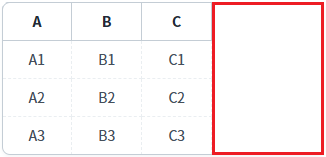
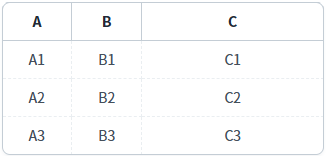
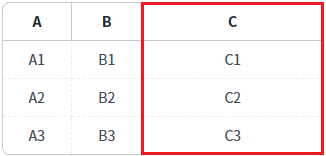

[GridView] 컬럼의 너비를 그리드 너비에 맞춰 자동 조절 설정하기 및 해제하기 - 스크립트
1개요
GridView의 'setAutoFit' 메소드와 'clearAutoFit' 메소드를 사용하여, 'autoFit' 속성을 설정하거나 해제하는 예제입니다.
각 메소드의 기능은 다음과 같습니다.
setAutoFit: autoFit 속성을 설정합니다.
clearAutoFit: autoFit 속성 설정을 해제합니다.
2구현된 기능
autoFit 속성의 설정 값을 allColumn으로 설정하기
autoFit 속성의 설정 값을 lastColumn으로 설정하기
autoFit 속성의 설정 해제하기
3예제 테스트 방법
3.1autoFit 속성의 설정 값을 allColumn으로 설정하기
예제 영역 'GridView의 너비에 맞춰 컬럼을 균등하게 설정'에 구성된 GridView에서 테스트합니다.1
STEP 1: 초기 상태 확인하기
GridView를 확인합니다. 오른쪽에 여백이 표시됩니다.
Image 1.브라우저(Chrome) 실행 예시

2
STEP 2: autoFit 설정 값을 변경합니다.
'autoFit의 설정 값을 'allColumn'으로 설정하기' 버튼을 클릭합니다.
3
STEP 3: 실행 결과를 확인합니다.
여백이 각 컬럼에 균등하게 분할됩니다.
Image 2.브라우저(Chrome) 실행 예시
3.2autoFit 속성의 설정 값을 lastColumn으로 설정하기
예제 영역 'GridView의 남은 여백을 마지막 컬럼에 설정하기'에 구성된 GridView에서 테스트합니다.1
STEP 1: 초기 상태 확인하기
GridView를 확인합니다. 오른쪽에 여백이 표시됩니다.
Image 3.브라우저(Chrome) 실행 예시

2
STEP 2: autoFit 설정 값을 변경합니다.
'autoFit의 설정 값을 'lastColumn'으로 설정하기' 버튼을 클릭합니다.
3
STEP 3: 실행 결과를 확인합니다.
여백이 마지막 컬럼에 할당됩니다.
Image 4.브라우저(Chrome) 실행 예시

3.3autoFit 속성의 설정 해제하기
예제 영역 'autoFit 속성의 설정 해제하기'에 구성된 GridView에서 테스트합니다.1
STEP 1: 초기 상태 확인하기
GridView를 확인합니다. 속성 autoFit의 값이 'lastColumn'으로 설정되어, 마지막 컬럼에 여백이 할당된 상태입니다.
Image 5.브라우저(Chrome) 실행 예시

2
STEP 2: autoFit 설정을 해제합니다.
'autoFit 속성의 설정 해제하기' 버튼을 클릭합니다.
3
STEP 3: 실행 결과를 확인합니다.
autoFit 기능이 해제되어 컬럼의 너비가 화면 파일에 명시한 너비로 표시되고, GridView의 오른쪽에 여백이 표시됩니다.
Image 6.브라우저(Chrome) 실행 예시

4구현 예시
4.1autoFit 속성의 설정 값을 allColumn으로 설정하기
1
스크립트를 작성합니다.
GridView의 'setAutoFit' 메소드를 사용합니다.
Example 1.Script
//예제 파일의 스크립트 "scwin.btn_ex1_onclick"를 참고하세요. //autoFit 설정 옵션 var jsnAutoFitOptions = { type : "allColumn" //autoFit 타입 //, minWidth : "300" //설정 값은 px 단위이며, gridView의 width가 설정 값보다 작아질 경우에 각 컬럼의 width의 합이 설정 값로 고정되어 계산됩니다. GridView의 속성 autoFitMinWidth과는 다른 기능입니다. }; //GridView [grd_exam1]에 autoFit 속성을 설정합니다. grd_exam1.setAutoFit(jsnAutoFitOptions);
4.2autoFit 속성의 설정 값을 lastColumn으로 설정하기
1
스크립트를 작성합니다.
GridView의 'setAutoFit' 메소드를 사용합니다.
Example 2.Script
//예제 파일의 스크립트 "scwin.btn_ex2_onclick"를 참고하세요. //autoFit 설정 옵션 var jsnAutoFitOptions = { type : "lastColumn" //autoFit 타입 }; //GridView [grd_exam2]에 autoFit 속성을 설정합니다. grd_exam2.setAutoFit(jsnAutoFitOptions);
4.3autoFit 속성의 설정 해제하기
1
스크립트를 작성합니다.
GridView의 'clearAutoFit' 메소드를 사용합니다.
Example 3.Script
//예제 파일의 스크립트 "scwin.btn_ex3_onclick"를 참고하세요. //GridView [grd_exam3]에 autoFit 속성의 설정을 해제합니다. grd_exam3.clearAutoFit();
5유의 사항
setAutoFit 메소드는 현재 그리드의 상태(여백, 컬럼 폭의 합 등)를 기준으로 계산됩니다.
최초 그려진 GridView를 기준으로 재설정하고자 하는 경우는 먼저 clearAutoFit 메소드로 설정을 해제해야 합니다.
6주요 API
setAutoFit( options )
clearAutoFit( )